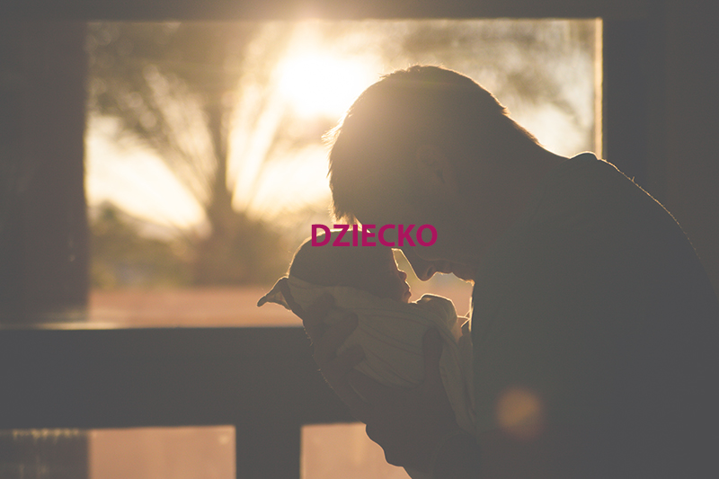

O firmie
Firma Usługowo - Opiekuńcza „OD JUNIORA DO SENIORA” powstała z myślą o tych, którzy na co dzień mają pod opieką osoby niesamodzielne oraz tych, którym brakuje czasu na podstawowe obowiązki domowe. Jesteśmy firmą świadczącą pozamedyczne usługi u Klienta w domu, na terenie miasta Sandomierza, Tarnobrzega i okolic. Niezależnie od tego czy jest to dziecko, osoba starsza, chora czy niepełnosprawna wiemy ile wysiłku wkładają Państwo w opiekę nad swoimi bliskimi i jesteśmy po to, by pomóc Państwu pogodzić ją z innymi dziedzinami życia. Praca zawodowa, spotkania z przyjaciółmi, romantyczna kolacja we dwoje, urlop, wyjazd służbowy czy nawet zwykłe przeziębienie to tylko niektóre sytuacje, z którymi każdy z nas ma do czynienia na co dzień i w których potrzebuje pomocy w opiece nad bliskimi. Ponadto mnogość obowiązków związanych z prowadzeniem domu i inne sprawy do załatwienia każdego dnia powodują, że zaczynamy żyć w stresie i zdenerwowaniu. Wychodzimy naprzeciw Państwa oczekiwaniom oferując szeroki zakres usług zarówno OPIEKUŃCZYCH POZAMEDYCZNYCH JAK I GOSPODARCZYCH DOMOWYCH I PRZYDOMOWYCH /szczegóły w ofercie/. Dajemy Państwu gwarancję, że pod naszą opieką Państwa bliscy będą traktowani z należytym szacunkiem i empatią, a zlecone prace porządkowe wykonane z należytą starannością.
Opiekunki
W naszej firmie zatrudniamy doświadczonych i odpowiednio przeszkolonych opiekunów, dla których bezpieczeństwo i zadowolenie podopiecznych to sprawy priorytetowe. Są to osoby uczciwe, które znamy i za które ręczymy. Każda zatrudniana przez nas osoba podchodzi z szacunkiem zarówno do człowieka jak i pracy którą wykonuje. Osoby wyznaczone do sprzątania, gotowania lub innych prac zleconych, również są godne zaufania i dokładne w wykonywaniu swoich obowiązków . W przypadku niezadowolenia ze współpracy z wyznaczoną do wykonania usług osobą, gwarantujemy wymianę na inną lub zwrot kosztów. Gwarantujemy dobór opiekuna i osoby do prac gospodarczych zgodny z Państwa wymaganiami.
Oferta
Świadczymy usługi: • doraźnie i na godziny, • długoterminowo, • całodobowo z zamieszkaniem, • okolicznościowo (wesele, noc sylwestrowa itp.) • ponieważ wiemy, że każda rodzina ma inne potrzeby Wymienione wyżej usługi mogą być realizowane łącznie lub osobno
Usługi opiekuńcze
• wykonywanie podstawowych zabiegów higienicznych i pielęgnacyjnych • przypominanie o przyjęciu lekarstw, a w razie potrzeby ich podawanie • pomoc w przygotowaniu posiłków i ich spożywaniu • dotrzymywanie towarzystwa i organizowanie czasu wolnego (czytanie, kino, spacery, nauka posługiwania się komputerem i internetem) • pomoc w dotarciu w wyznaczone miejsce (kościół, lekarz, urząd, itp.) • sporządzanie rocznej deklarację PIT • podtrzymywanie indywidualnych zainteresowań oraz umilanie czas w sposób dostosowany do potrzeb i możliwości podopiecznego
Ponadto oferujemy:
• profilaktykę przeciwodleżynową • ćwiczenia oddechowe • zmianę opatrunków • oklepywanie • usprawnianie ruchowe • usługi pielęgniarskie wraz z zabiegami pielęgniarskimi, wykonywanymi zgodnie z zaleceniem lekarza • rehabilitację mowy po wylewach i udarach /motoryka mała/ • rehabilitację - fizjoterapię
• przygotowywanie posiłków i karmienie maluszka • dbanie o czystość i higienę dziecka • organizacja rozwijających zabaw • towarzyszenie podczas spacerów • dbanie, aby dziecko było bezpieczne i zadowolone • w razie konieczności zawiezienie dziecka do lekarza, na trening, rehabilitację itp.
• robienie zakupów i gotowanie posiłków • sprzątanie - kompleksowe • pranie, prasowanie • prace ogrodowe • wychodzenie z psem na spacery • sprzątanie i mycie nagrobków • robienie przetworów na zimę • rąbanie drzewa, koszenie trawy, odśnieżanie placu wokół domu • inne według potrzeb
I pomoc przedlekarska
Szkolenie realizujemy w 1 dzień /8 godzin lekcyjnych/ w siedzibie firmy. Aby wziąć udział w szkoleniu należy dokonać pisemnego zgłoszenia drogą elektroniczną lub zapisać się osobiście w biurze firmy. Koszt szkolenia wynosi 120 zł/osoby. Serdecznie zapraszam! Warto nabyć umiejętności, które mogą uratować życie dziecka lub kogoś bliskiego.
Jeśli zainteresuje Państwa nasza oferta, prosimy o przesłanie swoich danych teleadresowych, pod którymi możemy się z Państwem skontaktować.